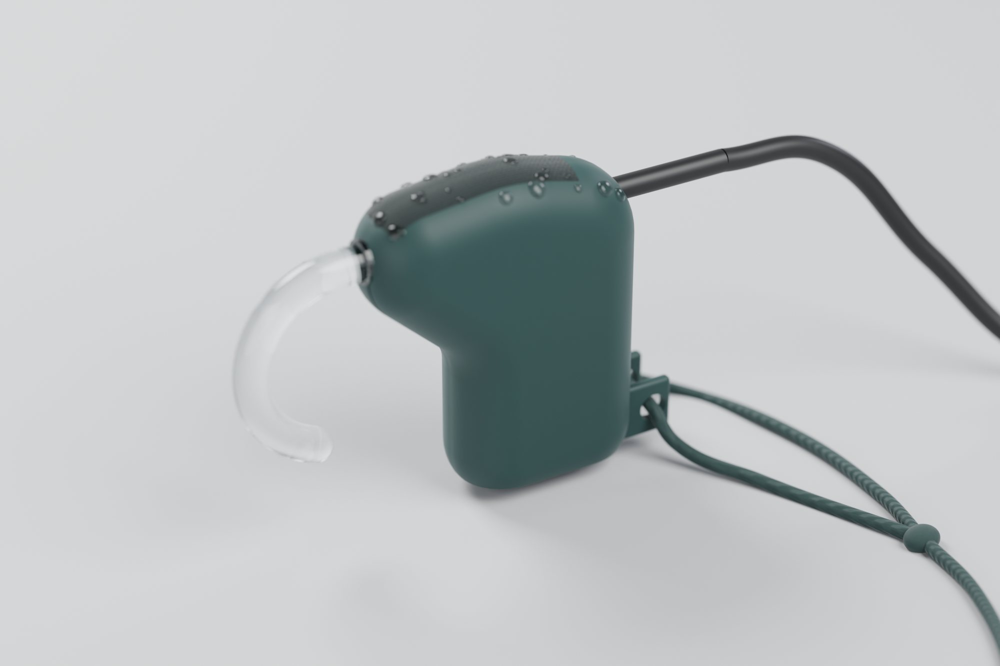
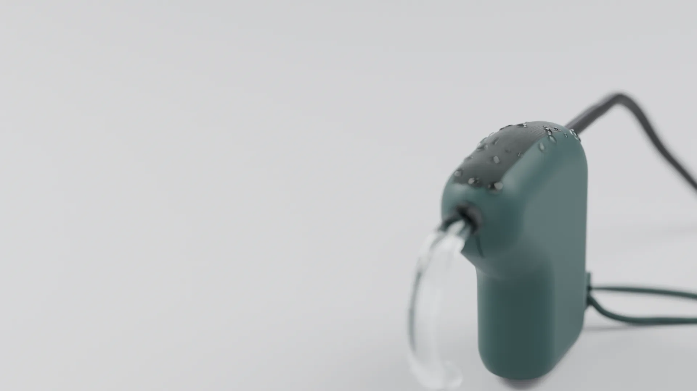
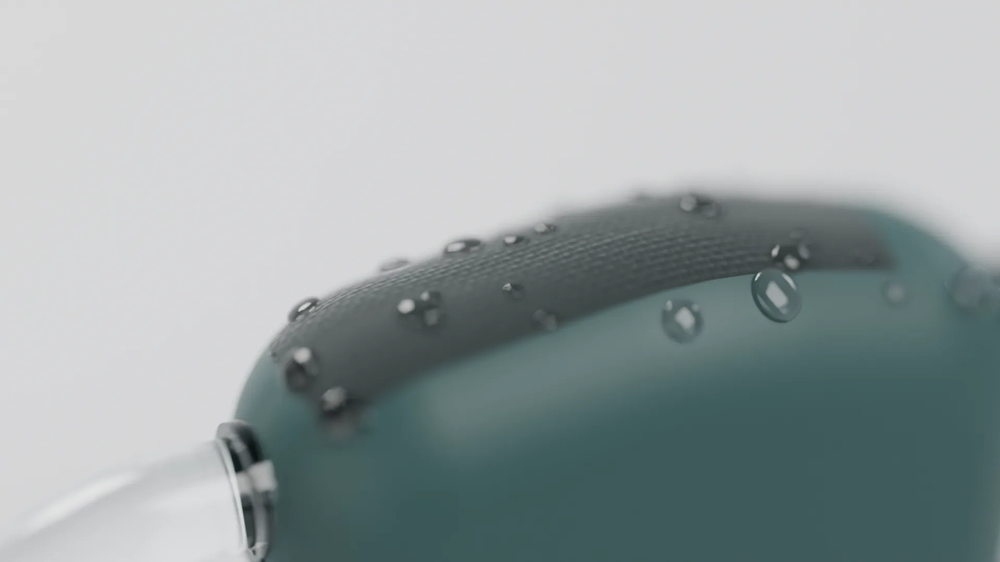
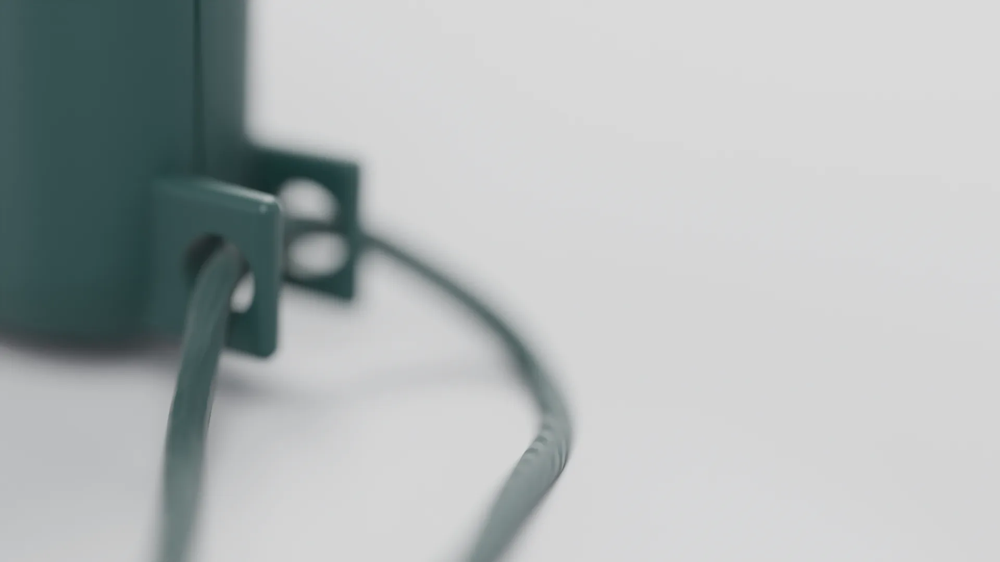
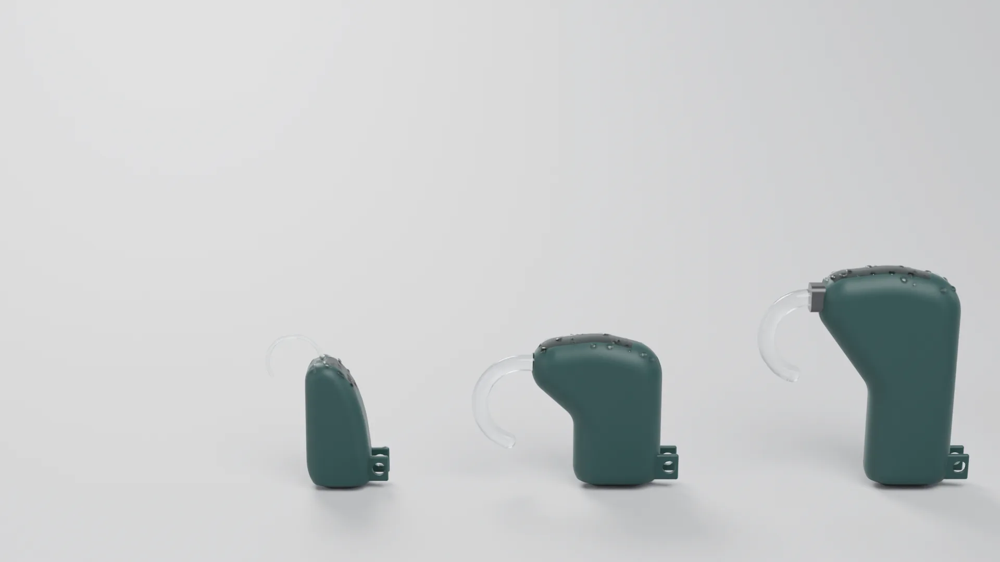
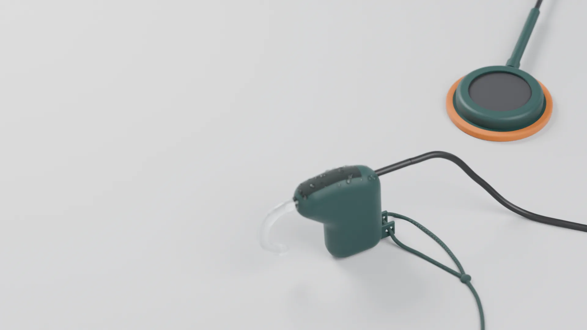

AMalla hidrofóbica
Funda de silicona LSR con una banda continua de malla hidrofóbica sobre los micrófonos: la gota no pasa, el sonido sí. Ojal para el cordón anticaída.
78 / 100 · cumple el brief
No tenés que elegir.
Funda de silicona de grado médico para procesadores de implantes cocleares y audífonos retroauriculares. Se calza como una media y una banda de malla hidrofóbica frena el agua sin tapar el sonido.
Grupo 10 · Diseño del Producto 2026 · UTN FRBA
Manuel Torres,
Luisina Infante,
Sofía Belén Salinas y
Pedro Buzzeo

Sin locución, con música original para la marca. Cada toma sale del modelo 3D de la funda renderizado en Blender; los textos se animaron con HyperFrames.
Un implante coclear o un audífono retroauricular es el puente de una persona con el sonido, la comunicación y su autonomía.
Las personas con audífonos o implantes viven con miedo a que el equipo se rompa o se moje haciendo deporte, con lluvia o con viento. Sin protectores accesibles que dejen pasar el sonido, la salida suele ser sacárselo y aislarse.
El sudor salino sulfata los contactos de la batería y tapa los micrófonos. Con los saltos, la bobina imantada se suelta.
Una llovizna en la calle obliga a sacarse el procesador y seguir sin escuchar, con el riesgo de cruzar una avenida así.
Las partículas finas saturan las protecciones de los micrófonos y el viento mete un ruido que tapa la voz.
Las carcasas rígidas se fisuran contra el piso en el recreo, en la cancha o en una plaza.
cuesta reponer un procesador fuera de garantía, entre $10.500.000 y $15.000.000. Ninguna familia puede afrontar ese recambio con tranquilidad.
Las opciones existentes resuelven un problema por vez. Por eso los usuarios siguen insatisfechos.
| Alternativa | Protege de | Sonido | Precio (ARS) | Límite |
|---|---|---|---|---|
| Ear Gear, funda de tela | Polvo y sudor leve | Buena, menos de 2 dB | $20.000 a $38.000 | Se empapa con lluvia o mucho sudor; no amortigua caídas. |
| Cochlear Aqua+, funda cerrada | Inmersión en agua | Atenúa 4 a 6 dB | $81.500 a $317.000 | Hay que desarmar antena e imán; cara y poco práctica a diario. |
| Otoclip y diademas | Solo caídas | No cubre | $17.000 a $52.000 | Nada frente a agua, sudor o arena. |
| Deshumidificador eléctrico | Secado nocturno | Se usa apagado | $174.000 | Reactivo: no protege mientras la persona entrena o camina. |
| AURA, Grupo 10 | Agua, polvo y caídas | Hasta 2,5 dB | $80.000 el kit de 2 | Se coloca en menos de 15 s, deja pasar el sonido y trae cordón anticaída. |
Encuestamos a usuarios de implantes cocleares y audífonos, y a sus familias. Agrupamos las respuestas en categorías para leer hábitos reales y validar la necesidad.
Mi hijo juega al vóley y al saltar se le cae el imán. En kayak o cuando hay agua se lo tiene que sacar por miedo a perderlo.Madre de un usuario de implante coclear
Hago funcional en el gimnasio y varias veces se me cayó al piso. Termina empapado de sudor, pero si me lo saco no le entiendo nada al profe.Usuario de procesador retroauricular
Un día me agarró una lluvia fuerte sin paraguas, se me mojó el procesador y estuvo días fallando hasta que se secó.Usuaria de implante coclear
Atendiendo pacientes en la guardia se me desprendió muchas veces al agacharme. Un protector discreto y seguro cambiaría todo.Usuaria, trabajadora de la salud
Porcentajes sobre las 132 respuestas, con las opciones agrupadas en categorías.
Conclusión. Más del 90 % vive el problema en primera persona o es quien paga las reparaciones.
Conclusión. La protección tiene que seguir la curva de la oreja y dejar paso al cable que va a la bobina del implante.
Conclusión. El 60 % tiene entre 19 y 60 años y el 23 % es menor: dos líneas estéticas, una neutra para adultos y otra con color para chicos.
Conclusión. El 65,1 % se mueve varias veces por semana o a diario: el sudor y los saltos son parte del uso normal.
Conclusión. El 78,8 % se limitó. El problema no es solo cuidar el aparato: es evitar que la persona se aísle.
Conclusión. La mitad teme a todo a la vez. Una funda que solo frene el agua o solo evite caídas no alcanza.
Conclusión. La mitad no usa nada, y la mitad de ellos no sabía que existían accesorios. Hay lugar para una solución práctica y accesible.
Conclusión. El 90,1 % le puso 4 o 5. La necesidad está validada.
Conclusión. Que no tape el sonido es el requisito número uno: la malla acústica es el centro técnico del proyecto. La queja más repetida sobre las fundas acuáticas es tener que desarmar el procesador.
Conclusión. El 73 % se concentra entre $20.000 y $100.000. Con estas respuestas se arma la curva de demanda que fija el precio.
Fuente: sondeo del Grupo 10, N = 132.
Cruzamos la disposición a pagar con un modelo de cebolla del mercado argentino para fijar el precio y las unidades por año.
Porcentaje de encuestados que pagaría al menos ese precio por funda.
| Precio | Compraría | Ingreso teórico |
|---|---|---|
| $20.000 | 110 (83,3 %) | $2.200.000 |
| $40.000 | 78 (59,1 %) | $3.120.000 |
| $60.000 | 48 (36,4 %) | $2.880.000 |
| $100.000 | 14 (10,6 %) | $1.400.000 |
A $40.000 por funda el ingreso teórico es el más alto. Se vende en kit de dos: el PVP es $80.000.
Cuánto puede costar fabricar el kit para cumplir la regla 2:1 de la cátedra.
De la población del país a las unidades que se pueden vender el primer año.
Las preguntas que fijaron el alcance del proyecto antes de bocetar.
El procesador queda expuesto al sudor salino, la lluvia, la arena y las caídas. La persona se lo saca por miedo a romperlo (reponerlo cuesta USD 7.000 a 10.000) y pierde el sonido y su autonomía.
Usuarios: chicos de 5 a 17 años con vida escolar y deportiva, y adultos de 18 a 60 que entrenan o se mueven por la calle. Sectores C1, C2 y ABC1.
Compradores: madres y padres de los más chicos, y los propios adultos.
Clubes, canchas y gimnasios, trayectos a pie o en bici con lluvia o viento, plazas, playa y el colegio. De 3 a 7 días por semana, cada vez que empieza la actividad o la lluvia.
Q = 3.000 kits por año, unos 250 por mes, con una cuota inicial del 3,3 % sobre un SOM de 91.000 personas.
Rango aceptado: $20.000 a $60.000 por funda. PVP $80.000 el kit de dos ($40.000 por funda), PSF $52.000 y costo variable máximo de $26.000.
Siete puntos duros, medibles en la maqueta y en el producto final.
Del lenguaje de la palabra al de las formas: exploramos el espacio de soluciones antes de elegir.
Idea rectora
Segunda piel acústica activaEl concepto es el principio generativo de una morfología: el objeto diseñado materializa un concepto. La creatividad reemplaza a la idea intuitiva y se mantiene dentro de los límites que marcan los datos del problema.Mauricio Sánchez Valencia; Bruno Munari, Cómo nacen los objetos
Cada una con su lámina: vista general, corte, despiece, colocación y chequeo contra el brief. Tocá una lámina para verla completa.
Funda de silicona LSR con una banda continua de malla hidrofóbica sobre los micrófonos: la gota no pasa, el sonido sí. Ojal para el cordón anticaída.
78 / 100 · cumple el brief
Funda flexible con escamas superpuestas hacia abajo. El agua resbala por las solapas y los canales ventilan y dejan pasar el sonido.
64,5 / 100 · cumple con ensayos
Bolsa preformada de polietileno de menos de 0,05 mm, termosellada y de un solo uso, en packs de 20 a 50.
70,5 / 100 · no cumple el brief
Funda de silicona a medida de cada procesador, con el color y la estampa que elija el usuario. Necesita un molde por modelo.
62,5 / 100 · no cumple el brief
Carcasa de dos valvas de TPU con bisagra, junta perimetral y ventanas con membrana. La única que también protege de golpes.
69,5 / 100 · cumple el brief
Complemento: silicona de menos de 0,5 mm sobre el imán, anillo absorbente desmontable para el sudor y manga para el cable.
Se suma a la elegida
Ocho factores ponderados de 0 a 10 (máximo 100 puntos) y un filtro de cumplimiento del brief. A gana en tres de los cuatro escenarios.
A saca el mayor puntaje y cumple el brief, con dos puntos a verificar en la maqueta: la pérdida acústica de la malla y el anclaje de 5 N en el ojal.
La funda descartable queda segunda, pero no pasa el filtro: no se puede lavar, no sujeta el equipo y no amortigua golpes. A se completa con el Módulo 2, la funda de bobina.
Una pieza de silicona que se pone con el gancho y el cable colocados. Cuatro talles cubren seis procesadores de cuatro marcas.
Un Cochlear Nucleus 8 armado, con el gancho y la batería puestos. Así lo tiene que poder enfundar cualquiera, en cualquier lugar.
El equipo entra por la boca de abajo y el gancho pasa por su agujero. La boca se estira entre 10 % y 69 % según el talle; la silicona rompe por encima del 300 %.
Puesta, la boca abraza la batería y la banda de malla queda justo sobre los micrófonos. Para sacarla se tira de la boca o de las orejas del ojal.

Escena 01 / 05
Una sola pieza
Silicona LSR de grado médico, 0,8 mm de pared y ninguna costura. Copia el equipo con 0,2 mm de holgura: no baila y no aprieta los botones.

Escena 02 / 05
Banda de malla hidrofóbica
La banda cubre los micrófonos y frena agua, sudor y arena. La meta es perder 2,5 dB o menos entre 500 y 4.000 Hz.

Escena 03 / 05
Ojal y cordón anticaída
Un cordón de poliéster pasa por el ojal trasero y se prende a la ropa con un clip. El ojal tiene que aguantar 5 N sin soltar el equipo.

Escena 04 / 05
Cuatro talles
Todos los talles salen del mismo modelo paramétrico, ajustado a las medidas de cada equipo.

Escena 05 / 05
Módulo 2, opcional
Una funda de 0,4 mm sobre el imán, un anillo absorbente desmontable para el sudor y una manga para el cable.
Elegí el talle y el equipo, mirá la funda sola o puesta, hacela transparente para ver los micrófonos y cambiale el color. Arrastrá para girar.
El modelo 3D no alcanza para cuatro requisitos del brief. La maqueta los pone a prueba antes de cerrar el diseño.
La primera versión se abría como un libro, con dos costuras y un cierre tipo ziploc de 0,8 mm. Alinear ese cierre con lluvia o con las manos mojadas es difícil, las costuras sumaban casi 100 mm de posibles entradas de agua y el cierre llevaba la pared a 1,8 mm, por encima del límite de 1,2 mm.
Por eso la funda pasó a ser de una pieza y a calzarse como una media. La versión libro se imprime igual (M2) para comparar tiempos.
| Ensayo | Se acepta si |
|---|---|
| Tiempo de colocación | Promedio menor a 15 s, también con las manos mojadas. |
| Pérdida acústica | 2,5 dB o menos en 500, 1.000, 2.000 y 4.000 Hz. |
| Salpicaduras, aprox. IPX4 | Papel seco dentro de la réplica tras 10 minutos de rocío. |
| Polvo, aprox. IP5X | Sin talco sobre los micrófonos tras 5 minutos. |
| Anclaje de 5 N | Sin desgarro en las orejas y sin que el equipo se salga. |
| Peso | Menos de 8 g; el modelo 3D da entre 1,0 y 2,6 g. |
| Sujeción en movimiento | El equipo no se cae y, si se cae, el cordón lo retiene. |
Una membrana hidrofóbica deja pasar el sonido y frena el agua; la silicona copia el procesador con 0,2 mm de holgura.
El procesador entra desde abajo, por la boca.
Para pasar el procesador, la boca se estira hasta un 69 %. La LSR de grado médico rompe recién entre el 300 y el 600 %: más de cuatro veces de margen. Recupera la forma después de cada colocación, no se pone pegajosa con el sudor ni con el sol, aguanta el lavado y puede estar todo el día contra la piel.
Elegimos Shore A 30. Con 20 se calza más fácil pero queda floja; con 40 cuesta estirarla con una mano. El TPE pierde ajuste con el uso, el TPU 95A es demasiado duro y el látex da alergias.
| Pieza | Material |
|---|---|
| Funda | LSR de grado médico, Shore A 30 ± 5, biocompatible (ISO 10993) |
| Membrana | ePTFE acústico con adhesivo, o malla de poliéster hidrofóbica |
| Cordón | Poliéster trenzado de 1,5 mm y clip de POM |
| Funda de bobina y manga | LSR, Shore A 20 a 30 |
| Anillo absorbente | Espuma de PU hidrófila o malla 3D de poliéster |
| Estuche | Cartulina reciclada y bandeja de pulpa moldeada |
3.000 kits por año, unas 25 fundas por día hábil. El moldeo se terceriza en un taller de silicona; las etapas que definen la calidad se hacen en casa.
Generados desde el modelo paramétrico en CadQuery, con vistas, cortes y detalles acotados.
El punto de mayor ingreso de la curva de demanda es $40.000 por funda, así que el kit de dos sale $80.000. El kit responde al uso real: muchos usuarios son bilaterales y quien usa un solo equipo tiene un repuesto mientras lava el otro.
| Costo variable por kit | $ |
|---|---|
| Silicona LSR de grado médico, unos 6 g | 250 |
| Moldeo a fazón, poscurado y desbarbado | 3.000 |
| Corte de ranuras y limpieza | 400 |
| Membrana troquelada | 1.800 |
| Colocación de membrana y control | 600 |
| Cordón anticaída con clip | 1.200 |
| Packaging | 2.000 |
| Control de calidad | 300 |
| Total | 9.550 |
Aunque el fazón costara el triple, el costo variable seguiría debajo del límite. La inversión inicial (moldes de aluminio por USD 15.000 a 30.000, equipamiento y marca) se recupera dentro del primer año. Con la mitad de las ventas (1.500 kits), la contribución de $64 millones todavía cubre los moldes.
Valores estimados con USD 1 = $1.500, a reemplazar por cotizaciones de proveedores.
El 78,8 % de los encuestados dejó de hacer algo por miedo a mojar, dañar o perder su equipo. La marca parte de esa tensión: cuidar el equipo y hacer lo que querés, las dos cosas.
"aura" va en minúsculas, en una sans redondeada de trazo grueso. El arco sobre la "a" remite a la banda de malla, a una onda de sonido y al contorno de la oreja. El aura es lo que rodea y protege; "aural" significa relativo al oído.
Instagram y TikTok Comunidades de usuarios Centros audiológicos 25/2, Día del Implante Coclear 3/3, Día de la Audición Deporte adaptado
Dos líneas de color: una discreta, en tonos piel y pelo, y otra expresiva, para quienes quieren que el equipo "sea parte de nosotros". La pieza de lanzamiento es el comercial de 40 segundos.
Las entregas en PDF, el modelo 3D y los comerciales.
Ciclo lectivo 2026, actualizado en octubre.